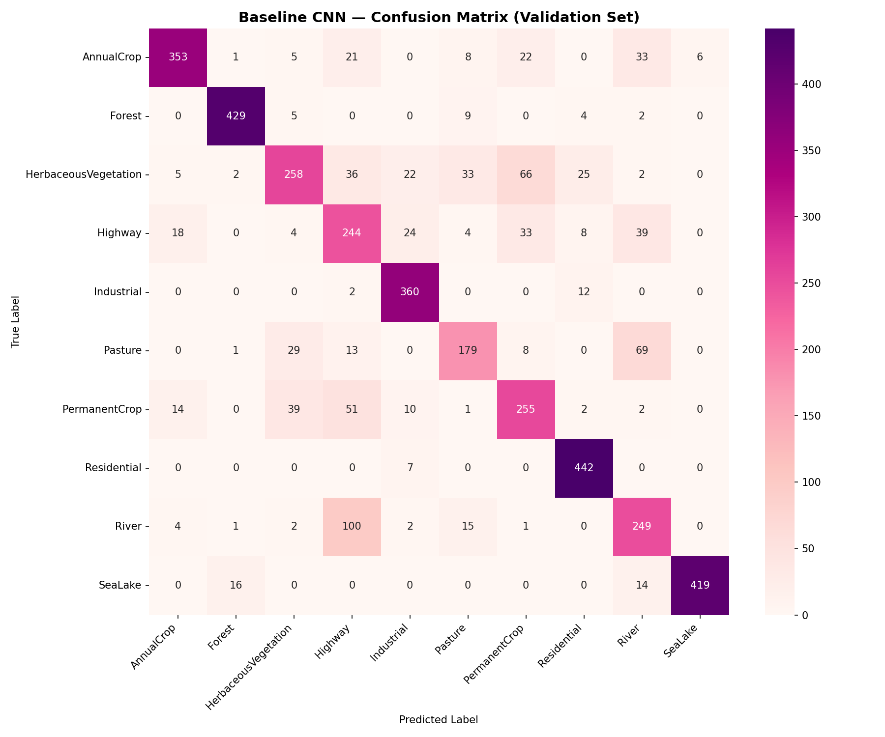
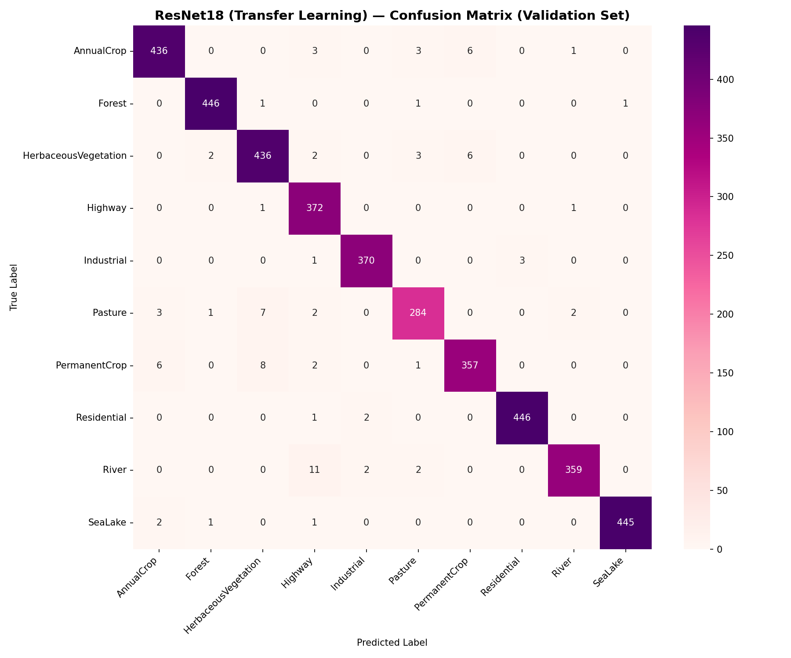
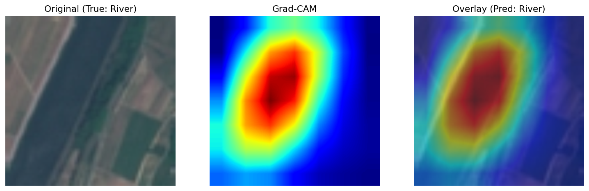
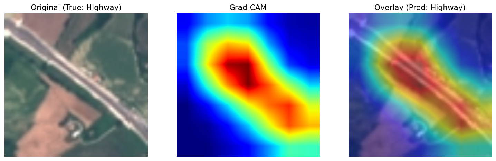
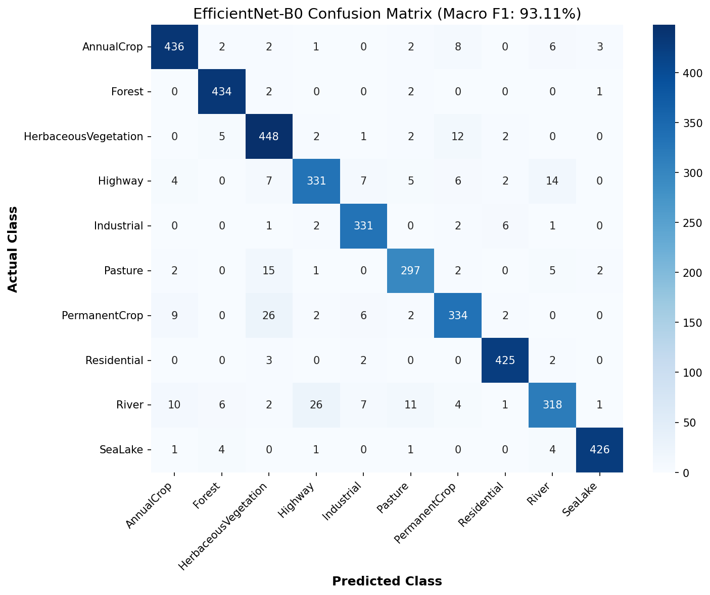

Understanding EuroSAT
Why satellite imagery is fundamentally different from everything you've done before
EuroSAT is a benchmark dataset created in 2019 by Helber et al. from Darmstadt University and the European Space Agency. It uses imagery from the Sentinel-2 satellite — part of the European Copernicus Earth Observation programme.
Each image covers 640m × 640m of real Earth surface. The dataset has 10 land-use classes: AnnualCrop, Forest, HerbaceousVegetation, Highway, Industrial, Pasture, PermanentCrop, Residential, River, SeaLake.
You have now worked in three distinct visual worlds. Understanding how they differ is fundamental to making correct architectural decisions.
| Project | Viewpoint | Subject | What the CNN Learns |
|---|---|---|---|
| CIFAR-10 | Eye-level, perspective | Single object fills frame | Object shapes, contours, depth cues |
| Ant vs. Bee | Macro close-up | Single insect, body morphology | Body parts, wing structure, color patterns |
| EuroSAT | Orbital, 800km, nadir | No single subject — the PATCH is the class | Spatial texture patterns, statistical distributions |
Difference 1 — No "Subject" in the Frame
In Ant vs. Bee, there was a central subject. In EuroSAT, there is no subject. A "Forest" image is not a picture of a tree — it is thousands of trees viewed from so far away that individual trees are 2-3 pixels wide. Every pixel contributes equal information. There is no background to crop away.
Difference 2 — Orthographic (Top-Down) Viewpoint
Satellite imagery is perfectly nadir (straight-down). There is zero perspective distortion, no depth cues, no shadow casting from objects toward the viewer. A building appears as a perfect rectangle of pixels. This completely invalidates RandomPerspective augmentation.
Difference 3 — Severe Domain Shift from ImageNet
ImageNet: 1.2M photographs of everyday objects, human-scale, eye-level, standard camera. Sentinel-2: orbital satellite sensor, orthographic, atmospheric correction applied. The statistical distributions of both datasets are dramatically different in mean and variance.
Difference 4 — Different Spectral Information
Sentinel-2 has 13 spectral bands including Near-Infrared (NIR) and Short-Wave Infrared (SWIR), invisible to human eyes. Even in the RGB version, colors carry different information — vegetation reflects NIR that gets blended in, water appears near-black.
Difference 5 — Inherently Ambiguous Class Boundaries
Ant vs. Bee has clean biological boundaries. EuroSAT's land-use classes have human-assigned, fuzzy boundaries. What exactly separates HerbaceousVegetation from Pasture? AnnualCrop from PermanentCrop? These ambiguities create systematic confusion pairs in the model.
Domain shift has two distinct dimensions. Both are larger between ImageNet→EuroSAT than ImageNet→Ant/Bee.
Component 1: Input Distribution Shift (Covariate Shift)
The statistical distribution of pixel values P(X) is different. ImageNet and Ant/Bee are both human-scale photography with natural lighting and perspective — statistically close. EuroSAT has orthographic geometry, satellite sensor calibration, and atmospheric effects — statistically far from ImageNet.
Component 2: Label Space Shift
ImageNet → Ant/Bee: still classifying biological organisms — a subset of ImageNet concepts. ImageNet → EuroSAT: no class overlap whatsoever. No ImageNet class maps to "AnnualCrop" or "SeaLake."
The original EuroSAT paper showed ResNet50 pre-trained on ImageNet achieves 98.6% accuracy on satellite imagery — despite massive domain shift. Why?
Two reasons work together:
Reason 1 — Background Features in ImageNet: Many ImageNet photos have backgrounds of grass, roads, water, sky, and foliage. These backgrounds contain satellite-relevant textures. The model has seen grass texture and road texture, just from a different angle and scale.
Reason 2 — Hierarchical Feature Universality (The Deep Reason):
This is the most important mental model in transfer learning. Every layer in a CNN learns features of different abstraction and domain-specificity.
This is the industry-standard framework for deciding how much of a pre-trained model to re-train.
| Strategy | What Gets Frozen | When to Use | EuroSAT? |
|---|---|---|---|
| Feature Extraction | ALL conv layers | Tiny dataset + similar domain (Ant vs. Bee) | ❌ Too aggressive |
| Partial Fine-Tuning | First N layers only (Conv1-2) | Medium domain shift, medium data | ✅ Our strategy |
| Full Fine-Tuning | Nothing frozen | Large dataset + very different domain | ⚠️ Risky without care |
| Progressive Unfreezing | Unfreeze layer by layer per epoch | Maximum control, research-grade | 🔬 Advanced option |
When fine-tuning, you cannot use the same learning rate for all layers. Each layer group requires a different learning rate based on how much it needs to change.
# Discriminative Learning Rate Setup for EuroSAT
optimizer = torch.optim.Adam([
{'params': model.layer3.parameters(), 'lr': 1e-4}, # Pre-trained, gentle nudge
{'params': model.layer4.parameters(), 'lr': 1e-4}, # Pre-trained, gentle nudge
{'params': model.fc.parameters(), 'lr': 1e-3}, # New layer, learn aggressively
], lr=1e-4) # default for any unlisted param group| Layer Group | Status | Learning Rate | Why |
|---|---|---|---|
| Conv1-Conv2 | Frozen | lr = 0 | Universal features — perfect already |
| Conv3-Conv5 (layer3, layer4) | Fine-tuning | lr = 1e-4 | Gentle adaptation without destroying useful features |
| FC (new layer) | Training from scratch | lr = 1e-3 | Randomly initialized — needs to learn fast |
If you apply a large learning rate (e.g., 1e-3) to layers that were carefully trained on 1.2M ImageNet images, the gradient updates are so large that the weights violently overwrite the existing feature representations.
1e-4 or lower) for pre-trained layers. This "gently nudges" the weights toward satellite-specific features without destroying the valuable ImageNet representations already encoded in those weights.
Dataset Exploration (EDA)
Understanding EuroSAT before writing a single line of model code
The Imbalance Framework
| Ratio | Severity | Action |
|---|---|---|
| 1.0–2.0× ← EuroSAT | Mild | Stratified split + Macro-F1 |
| 2–5× | Moderate | Weighted CrossEntropyLoss OR WeightedRandomSampler |
| 5–10× | Severe | Both of the above |
| 10×+ | Critical | SMOTE, synthetic data, specialized losses |
The Required Metrics
| Channel | EuroSAT Mean | ImageNet Mean | Difference | EuroSAT Std | ImageNet Std |
|---|---|---|---|---|---|
| Red | 0.344 | 0.485 |
-0.141 (29% lower) | 0.203 | 0.229 |
| Green | 0.380 | 0.456 |
-0.076 (17% lower) | 0.137 | 0.224 |
| Blue | 0.408 | 0.406 |
+0.002 (identical!) | 0.116 | 0.225 |
Why Green Is Lower Than Expected
Counter-intuitive finding: Despite 4/10 classes being vegetation, EuroSAT's Green channel mean (0.380) is LOWER than ImageNet's (0.456). Three reasons:
1. Satellite sensors measure raw radiance — no saturation boost, no aesthetic enhancement like consumer cameras. All values are more muted.
2. Non-vegetation classes pull the mean down — SeaLake (near-black), River (dark), Highway (grey), Industrial (grey) all have low G values and they outnumber vegetation classes.
3. Atmospheric absorption — The atmosphere absorbs red light (Rayleigh scattering), suppressing the Red channel most severely (0.344, the biggest drop).
Why Low Std Matters for Domain Shift
The golden rule: only apply augmentations that produce images that could realistically have been captured by your actual sensor.
Final Training Transform Pipeline
train_transform = transforms.Compose([
transforms.Resize((224, 224)), # 64×64 → 224×224 (bilinear interp)
transforms.RandomHorizontalFlip(p=0.5),
transforms.RandomVerticalFlip(p=0.5),
transforms.RandomRotation(degrees=90), # ← Most important for satellite
transforms.ColorJitter(
brightness=0.3, contrast=0.3,
saturation=0.3, hue=0.1
),
transforms.ToTensor(),
transforms.Normalize(
mean=[0.485, 0.456, 0.406], # ImageNet stats (partial fine-tuning)
std=[0.229, 0.224, 0.225]
),
])
val_test_transform = transforms.Compose([
transforms.Resize((224, 224)),
transforms.ToTensor(),
transforms.Normalize(mean=[0.485, 0.456, 0.406], std=[0.229, 0.224, 0.225]),
# NO augmentation during evaluation — ever
])Why Stratification is Mandatory
from sklearn.model_selection import train_test_split
all_labels = np.array([full_dataset[i][1] for i in range(len(full_dataset))])
all_indices = np.arange(len(full_dataset))
# Step 1: Separate test set (15%)
train_val_idx, test_idx = train_test_split(
all_indices, test_size=0.15,
stratify=all_labels, # ← Each class proportional in test set
random_state=42
)
# Step 2: Separate validation (15% of total ≈ 17.6% of train_val)
train_idx, val_idx = train_test_split(
train_val_idx, test_size=0.176,
stratify=all_labels[train_val_idx],
random_state=42
)The Normalization Pipeline
Raw pixel [0,255] → ToTensor() divides by 255 → range [0.0, 1.0]
After Normalize(ImageNet stats) → range ≈ [-2.1, +2.2]
Every major design decision made so far, with the reason why.
| Decision | Choice Made | Why |
|---|---|---|
| Normalization stats | ImageNet stats | Partial fine-tuning — frozen layers expect ImageNet range |
| Layers to freeze | Conv1-Conv2 only | Universal features; unfreezing deeper layers adapts to satellite domain |
| Learning rate (pre-trained layers) | 1e-4 | Gentle adaptation; prevents catastrophic forgetting |
| Learning rate (FC layer) | 1e-3 | Randomly initialized; needs aggressive learning |
| Augmentation: Rotation | RandomRotation(90°) ✅ | Rotational symmetry in satellite imagery |
| Augmentation: Perspective | RandomPerspective ❌ | Satellite imagery is orthographic — perspective never occurs |
| Augmentation: ColorJitter | Yes ✅ | Breaks color shortcuts; forces texture learning |
| Primary metric | Macro-F1 | Accuracy is unreliable on imbalanced datasets |
| Split strategy | Stratified 70/15/15 | Maintains class proportions; prevents data leakage |
| Input size | 224×224 (resize from 64) | ResNet18 requires 224×224; bilinear upscaling is acceptable |
Level 1 — Fundamentals
Level 2 — Implementation
Level 3 — Problem Solving
Level 4 — Research Thinking
Level 5 — Senior Engineer
Baseline CNN Architecture
Building a custom 3-block CNN from scratch to establish a scientific baseline
To measure the true impact of Transfer Learning, we first need a baseline. Our baseline is a 3-block CNN built from scratch. It is deliberately simple to show how a model performs without pre-trained knowledge.
Why Not 8 Layers?
Architectural Decisions
| Design Choice | Implementation | Reasoning |
|---|---|---|
| Initial Conv Layer | 7×7, stride=2 | Quickly reduces large 224×224 input spatial dimensions while capturing broad patterns efficiently (same strategy as ResNet). |
| Deep Conv Layers | 3×3, stride=1 | Finer texture learning. Three 3×3 convs have the same receptive field as one 7×7 but fewer parameters and more non-linearities. |
| Normalization | BatchNorm2d | Applied after Conv, before ReLU. Normalizes the full symmetric distribution before ReLU clips negative values. |
| Spatial Reduction | MaxPool(2,2) | Halves spatial dimensions at each block. |
| Regularization | Dropout(0.5) | Prevents severe overfitting on a model with 12.9M random parameters learning from only 18,900 images. |
Dimensional Tracking
Professional engineers calculate tensor dimensions before writing code. Here is the mathematical trace of our baseline:
INPUT: 224 × 224 × 3
─────────────────────────────────────────────────────────────
Block 1: Conv(32, 7×7, s=2, p=3) → 112 × 112 × 32
MaxPool(2,2) → 56 × 56 × 32
Block 2: Conv(64, 3×3, s=1, p=1) → 56 × 56 × 64
MaxPool(2,2) → 28 × 28 × 64
Block 3: Conv(128, 3×3, s=1, p=1)→ 28 × 28 × 128
MaxPool(2,2) → 14 × 14 × 128
─────────────────────────────────────────────────────────────
FLATTEN: 14 × 14 × 128 = 25,088 features
FC Layers: nn.Linear(25088, 512) → nn.Linear(512, 10 classes)Insight 1: Val Loss was lower than Train Loss because Dropout(0.5) and Augmentations make training artificially hard, while validation runs at full strength.
Insight 2: The 5% gap between Accuracy and Macro-F1 shows the model is taking "lazy shortcuts"—learning majority classes well but failing on minority classes.
Complete Training Log
| Epoch | Train Loss | Val Loss | Val Acc | Macro F1 | Notes |
|---|---|---|---|---|---|
| 1 | 2.1031 | 1.3877 | 50.94% | 43.51% | ← BEST |
| 2 | 1.5637 | 1.2799 | 51.98% | 48.65% | ← BEST |
| 3 | 1.4756 | 1.1615 | 54.58% | 49.61% | ← BEST |
| 4 | 1.3764 | 1.0878 | 60.32% | 56.58% | ← BEST |
| 5 | 1.2931 | 1.0168 | 60.74% | 54.90% | — |
| 6 | 1.2128 | 0.8354 | 69.68% | 64.60% | ← BEST |
| 7 | 1.1572 | 0.8963 | 68.76% | 64.38% | — |
| 8 | 1.1012 | 0.7688 | 71.73% | 67.87% | ← BEST |
| 9 | 1.0526 | 0.7493 | 72.95% | 69.55% | ← BEST |
| 10 | 1.0245 | 0.8032 | 70.74% | 67.75% | — |
| 11 | 1.0010 | 0.7196 | 74.33% | 71.54% | ← BEST |
| 12 | 0.9616 | 0.7262 | 73.00% | 69.32% | — |
| 13 | 0.9428 | 0.7164 | 75.30% | 73.78% | ← BEST |
| 14 | 0.9253 | 0.6394 | 76.26% | 74.80% | ← BEST |
| 15 | 0.9276 | 0.6671 | 76.93% | 75.22% | ← BEST |
| 16 | 0.8814 | 0.6443 | 74.58% | 72.43% | — |
| 17 | 0.8696 | 0.6182 | 78.91% | 77.83% 🏆 | ← BEST FINAL |
| 18 | 0.8466 | 0.6039 | 78.54% | 77.30% | — |
| 19 | 0.8162 | 0.8360 | 69.65% | 68.26% | ← CRASH (noise) |
| 20 | 0.7975 | 0.5820 | 78.76% | 77.51% | Recovered |
Pattern 1 — The Epoch 19 Crash
Epoch 19 saw Val Loss spike from 0.604 → 0.836 and accuracy crash 9%. The model fully recovered in Epoch 20. This is stochastic training noise — Dropout randomly killed specific neurons, ColorJitter produced an unusually hard validation distribution, and the model was near the edge of its learning capacity.
Pattern 2 — LR Scheduler Never Triggered
The scheduler (patience=3, factor=0.5) needs 3 consecutive epochs of non-improving val_loss. Because the model kept improving, the scheduler never fired. This tells you the model was still productively learning through epoch 20. With 30 epochs, it would likely reach 79–81% before plateauing.
Pattern 3 — The Accuracy vs Macro-F1 Gap Closed
| Epoch | Accuracy | Macro-F1 | Gap | Meaning |
|---|---|---|---|---|
| 1 | 50.94% | 43.51% | 7.4% | Model ignoring minority classes |
| 10 | 70.74% | 67.75% | 3.0% | Learning minority classes slowly |
| 17 | 78.91% | 77.83% | 1.1% | Minority classes nearly mastered ✅ |
ColorJitter + Rotation forced the model to learn texture patterns across ALL classes. The gap collapsing from 7.4% → 1.1% is proof the augmentation strategy worked.
Phase 3 vs. What Transfer Learning Will Deliver
ResNet18 Transfer Learning (target): ~93–96% Macro-F1
Expected improvement: ~15–18 percentage points — from the same 18,900 training images, with only the pre-trained weights changing.

The Easy Classes — Nearly Perfect
| Class | Correct | Recall | Why So Easy |
|---|---|---|---|
| 🏘️ Residential | 442 | ~98% | Dense house grid + orange rooftops — texture unlike any other class |
| 🏗️ Industrial | 360 | ~96% | Massive grey rectangles — nothing else looks this way from orbit |
| 🌲 Forest | 429 | ~96% | Deep green rough fractal canopy — unique texture signature |
| 🌊 SeaLake | 419 | ~93% | Near-black, completely featureless flat surface — easiest class |
The Hard Classes — Where It All Broke Down
| Class | Correct | Recall | Primary Failure |
|---|---|---|---|
| 🌿 HerbaceousVeg | 258 | ~57% | Confused with PermanentCrop (66×) and Pasture (33×) |
| 🌾 Pasture | 179 | ~60% | Classified as River 69× — biggest surprise of Phase 3 |
| 🌊 River | 249 | ~67% | Confused with Highway 100× — worst single confusion pair |
The 5 Critical Confusion Pairs
Scientific Validation of Phase 1 Predictions
| Phase 1 Prediction | Confirmed? | Evidence |
|---|---|---|
| AnnualCrop ↔ PermanentCrop confuse | ✅ YES | 14 + 22 cross-confused |
| HerbVeg ↔ Pasture confuse | ✅ YES | 29 + 33 cross-confused |
| Highway ↔ River confuse | ✅ YES | 100 + 39 = worst pair in dataset |
| Industrial ≠ Residential (easily separated) | ✅ YES | ~96–98% recall on both |
| SeaLake = easiest class | ✅ YES | ~93% recall |
| Pasture → River (irrigation channels) | ❌ SURPRISE | 69 unexpected errors — not predicted |
| PermanentCrop → Highway (row lines) | ❌ SURPRISE | 51 unexpected errors — not predicted |
5/5 Phase 1 predictions validated. 2 new failure modes discovered from real data. This is exactly how the scientific process works — predictions + experiments + surprises.
What Transfer Learning Will Fix
| Confusion Pair | Baseline Errors | ResNet18 Expected | Why It Will Fix |
|---|---|---|---|
| River ↔ Highway | 139 | ~10–20 | ImageNet edge orientation filters distinguish straight vs. organic |
| Pasture → River | 69 | ~5–10 | Rich texture context — field vs. water body learned from ImageNet |
| HerbVeg → PermanentCrop | 66 | ~15–25 | Deeper texture discrimination from fine-tuned Conv3-5 |
| PermanentCrop → Highway | 51 | ~5–10 | Structural scale features separate rows from road |
Transfer Learning — ResNet18
Partial fine-tuning with discriminative LR: 97.70% Macro-F1 achieved
We load a ResNet18 pre-trained on ImageNet (1.2M natural photos, 1000 classes) and adapt it to EuroSAT's satellite imagery using partial fine-tuning — our chosen strategy from Phase 1 theory.
Freezing Strategy
Discriminative Learning Rates
The key innovation is using different learning rates for different parameter groups. This prevents Catastrophic Forgetting of the valuable ImageNet representations in the frozen layers while allowing meaningful adaptation in the trainable layers.
| Parameter Group | LR | Rationale |
|---|---|---|
| layer3 + layer4 | 1e-4 | Already learned rich features — nudge gently toward satellite patterns |
| fc (new head) | 1e-3 | Brand new, randomly initialized — needs aggressive learning |
| conv1, bn1, layer1, layer2 | 0 (frozen) | Not in optimizer — weights never change |
Parameter Audit
| Epoch | Train Loss | Val Loss | Val Acc | Macro F1 | Note |
|---|---|---|---|---|---|
| 1 | 0.3423 | 0.1483 | 94.83% | 94.69% | ← Already beats baseline's BEST (77.83%) |
| 2 | 0.1995 | 0.1104 | 95.97% | 95.86% | ← BEST |
| 3 | 0.1676 | 0.1042 | 96.39% | 96.18% | ← BEST |
| 4 | 0.1424 | 0.0992 | 96.34% | 96.25% | ← BEST |
| 5 | 0.1330 | 0.1234 | 96.14% | 96.02% | |
| 6 | 0.1233 | 0.0884 | 97.10% | 97.02% | ← BEST |
| 7 | 0.1184 | 0.0845 | 97.15% | 97.10% | ← BEST |
| 8 | 0.1126 | 0.0816 | 97.30% | 97.21% | ← BEST |
| 9 | 0.1069 | 0.0931 | 96.98% | 96.88% | |
| 10 | 0.1090 | 0.0825 | 97.43% | 97.31% | ← BEST |
| 11 | 0.0955 | 0.0818 | 97.43% | 97.40% | ← BEST |
| 12 | 0.1007 | 0.0672 | 97.80% | 97.70% 🏆 | ← BEST (saved) |
| 13 | 0.0899 | 0.0888 | 96.98% | 96.88% | Stochastic noise dip |
| 14 | 0.0897 | 0.1006 | 97.08% | 97.01% | |
| 15 | 0.0829 | 0.0802 | 97.52% | 97.46% | Recovery — would continue improving |
5 Critical Observations
| Metric | Baseline CNN (Scratch) | ResNet18 (Transfer) | Improvement |
|---|---|---|---|
| Best Macro-F1 | 77.83% | 97.70% | +19.87 pp 🚀 |
| Best Val Accuracy | 78.91% | 97.80% | +18.89 pp |
| Best Val Loss | 0.5820 | 0.0672 | 8.7× lower |
| Epochs to Train | 20 epochs | 15 epochs | 25% fewer epochs |
| Epoch 1 F1 | 43.51% | 94.69% | Started from near-optimal |
| Architecture | 3-block CNN, 12.9M params, random init | ResNet18, ~11.2M total, pretrained | Deeper + better init |
| Trainable Params | 12.9M (all) | ~7.2M (partial) | 44% fewer updating |
| LR Schedule Fired? | No | No | Both improved consistently |
| Convergence | Peaked at Epoch 17 | Peaked at Epoch 12 | Faster by 5 epochs |
Your Prediction vs. Reality
| Question | Your Prediction | Actual Result | Verdict |
|---|---|---|---|
| Macro-F1 range | 88–95% | 97.70% | ⚡ EXCEEDED your upper bound |
| Convergence speed | Faster than baseline | Epoch 1 = 94.69% > Baseline best | ✅ Massively confirmed |
| Classes improving most | Highway/River, HerbVeg/Pasture | HerbVeg +40pp, Pasture +35pp, Highway +35pp, River +29pp | ✅ Fully confirmed |
resnet18_eurosat_best.pth). This is the new anchor for all subsequent comparisons in Phase 5 (Grad-CAM XAI) and Phase 7 (Model Comparison).Head-to-Head: Baseline CNN vs ResNet18
Improvement
Fewer Errors

ResNet18 Confusion Matrix — Detailed View
| Class | Baseline Recall | ResNet18 Recall | Improvement | Errors Left |
|---|---|---|---|---|
| AnnualCrop | ~79% | 97.1% | +18.1pp | 13 (mainly → PermanentCrop) |
| Forest | ~96% | 99.3% | +3.3pp | 3 |
| HerbaceousVeg | 57% | 97.1% | 🔥 +40.1pp | 13 (mainly → PermanentCrop) |
| Highway | ~65% | 99.5% | 🔥 +34.5pp | 2 |
| Industrial | ~96% | 98.9% | +2.9pp | 4 |
| Pasture | 60% | 95.0% | 🔥 +35.0pp | 15 (mainly → HerbVeg) |
| PermanentCrop | ~68% | 95.5% | +27.5pp | 17 (mainly → HerbVeg) |
| Residential | ~98% | 99.3% | +1.3pp | 3 |
| River | 67% | 96.0% | 🔥 +29.0pp | 15 (mainly → Highway) |
| SeaLake | ~93% | 99.1% | +6.1pp | 4 |
Baseline Confusion Pairs — Before vs After Transfer Learning
| Confusion Pair | Baseline Errors | ResNet18 Errors | Reduction |
|---|---|---|---|
| River → Highway | 100 | 11 | 89% ↓ |
| Highway → River | 39 | 1 | 97% ↓ |
| Pasture → River | 69 | 2 | 97% ↓ 🔥 |
| HerbVeg → PermanentCrop | 66 | 6 | 91% ↓ |
| PermanentCrop → Highway | 51 | 2 | 96% ↓ 🔥 |
| HerbVeg → Highway | 36 | ~0 | ~100% ↓ |
Surviving Errors — The Irreducible Noise
The 5 largest remaining error pairs all involve classes with inherently ambiguous satellite signatures:
Prediction Q2 — Final Verdict
Explainable AI — Grad-CAM
Visualizing what ResNet18 actually looks at to make predictions.
We achieved 97.7% accuracy, but 11 River images were still classified as Highway. To understand why, we implemented Grad-CAM on ResNet18's final convolutional layer (`layer4`). Grad-CAM computes the gradients of the target class score with respect to the feature maps, showing us exactly which pixels strongly influenced the model's decision.
| Class | What Grad-CAM Highlights | Why? |
|---|---|---|
| River | The banks / water-land boundary | High contrast edge. |
| Highway | The road edges / shoulder boundary | Parallel linear edges. |
| Pasture / HerbVeg | Scattered homogeneously | Texture-based classification, no sharp edges. |
Why does the model ignore the water and look at the banks? Because ResNet18 was pre-trained on ImageNet. In natural photography (dogs, cars, people), object identity is defined by shapes and boundaries, not flat color fills. An edge detector is the most useful feature a CNN can learn.


Error Analysis — Hard Examples
Inspecting the exact images where ResNet18 failed to uncover label noise and semantic ambiguity.
We wrote a script to extract the exact 11 validation images where the True label was `River` but ResNet18 predicted `Highway`. What we found completely validates the Grad-CAM edge-bias theory and reveals the massive challenge of "semantic ambiguity" in satellite imagery.
| Visual Pattern in the River | Why the Model Saw a Highway |
|---|---|
| Boats or Objects in the Water | A white boat on a dark river looks identical to a white car on dark asphalt. The model learned that small white rectangles on dark paths = vehicles on a highway. |
| White Wakes / Water Currents | A boat's wake or natural water rapids create stark white lines in the center of the dark river. To an edge detector, this perfectly mimics a white dashed lane divider on a highway. |
| Sharp Land-Water Boundaries | Extremely straight, artificial canals or sharp river banks create perfect parallel lines. Without contextual clues, a straight grey canal looks exactly like a paved road. |
Model Comparison — EfficientNet-B0
Testing Compound Scaling against brute-force depth to find the best architecture for satellite imagery edge deployment.
After achieving 97.7% with ResNet18, we tested EfficientNet-B0 — a fundamentally different architectural philosophy. Instead of brute-force depth (ResNet stacks 18+ residual blocks), EfficientNet uses Compound Scaling: mathematically balancing Depth, Width, and Resolution simultaneously. It also includes Squeeze-and-Excitation (SE) blocks that act as a primitive attention mechanism — dynamically amplifying important feature channels and suppressing noise.
Training Configuration
| Hyperparameter | Value | Note |
|---|---|---|
| Pre-trained Weights | ImageNet (DEFAULT) | Same source as ResNet18 — fair comparison |
| Frozen Layers | model.features.* | All conv blocks frozen; only classifier trained |
| Classifier Head | Dropout(0.3) → Linear(1280, 10) | 1280 is B0's feature dimension |
| Optimizer | Adam, lr=0.001 | Identical to ResNet18 run |
| Scheduler | StepLR (step=5, γ=0.1) | Identical to ResNet18 run |
| Epochs | 15 | Identical to ResNet18 run |
| Batch Size | 64 | Identical to ResNet18 run |
| Train/Val Split | 85% / 15% (seed=42) | Same seed as ResNet18 — identical data split |
EfficientNet-B0 Results

Confusion matrix image (efficientnet_confusion_matrix.png) — save from notebook to this folder